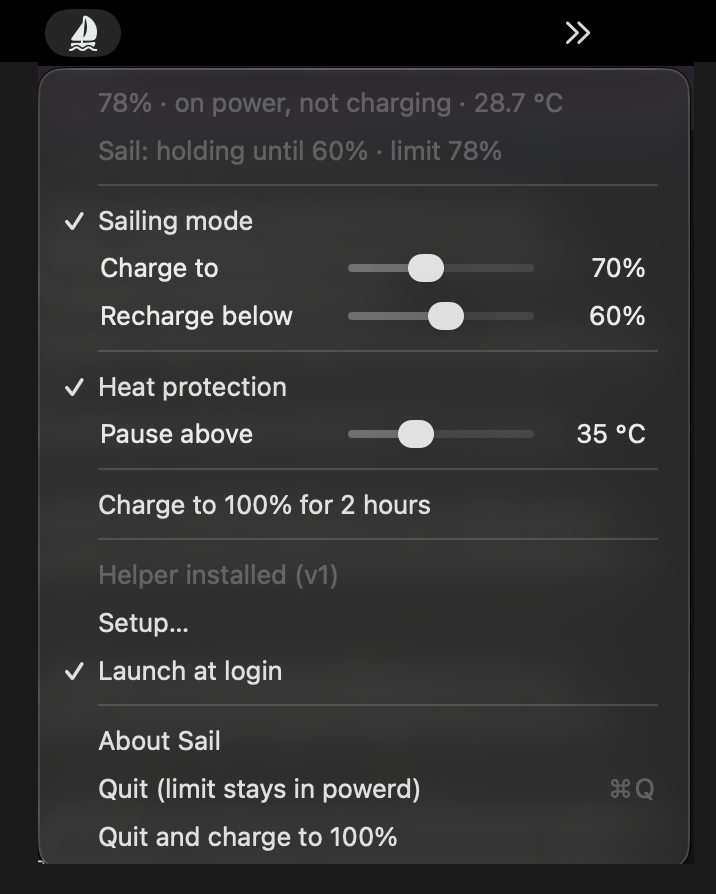
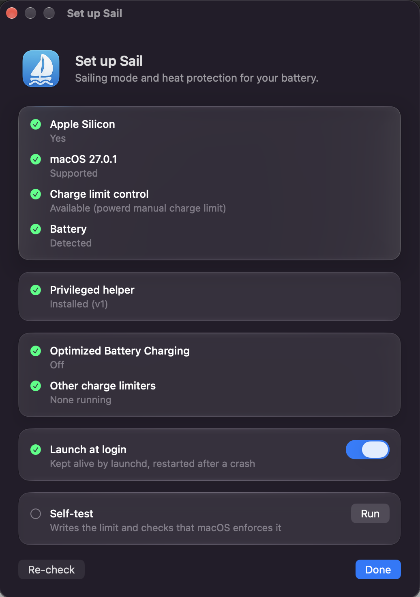

How macOS 27 broke charge limiters, and the mechanism that still works
Every battery limiter for Apple Silicon used to flip a handful of SMC keys. Current firmware has removed or locked all of them. The manual charge limit built into powerd is the one path left, and it turns out to accept any value, not just the 80–100 % System Settings shows.
I wanted two things from a charge limiter: sailing mode (charge to 70, hold, do not top up again until the battery drains to 60) and heat protection (pause charging while the battery is hot). After the macOS 27 update the limiter I was using stopped holding its limit, so I went looking for what actually controls charging on current firmware. This is what I found, and what Sail is built on.
1. The SMC keys are gone
For years limiters wrote to the SMC: CH0B/CH0C to stop charging, CH0I to cut wall power, later CHTE on newer chips, and BCLM on Intel. A read-only enumeration of the SMC on firmware 20457 shows:
| Key | Result |
|---|---|
CH0B CH0C CHTE CH0I BCLM CHWA | Absent (SMC result 0x84, key not found) |
bfF0 bfD0 bfE0 CH0J CHLS (firmware limit) | Present, but every access returns kIOReturnNotPrivileged, even as root. Gated behind a private entitlement. |
CHIE (disable adapter input) | Present and writable by root, but the Mac then runs from the battery and keeps draining through sleep. A blunt instrument. |
TB0T TB1T TB2T (battery thermistors) | Readable by any user, °C as float. The only temperature source: the IORegistry battery entry exposes none. |
So the two classic approaches, "stop charging" and "write a firmware limit", are both closed to third parties. What is left is whatever Apple's own UI uses.
2. The native limit lives in powerd
macOS 26.4 added a manual charge limit to System Settings → Battery. Behind it is a private framework, PowerUI.framework, with a class PowerUISmartChargeClient that talks over XPC to PowerUIAgent (root). The useful selectors, found with the Objective-C runtime:
enableMCL: setMCLLimit:error: getMCLLimitWithError: isMCLCurrentlyEnabled:
isMCLSupported smartChargingUIState:chargeLimit:chargingOverrideAllowed:withError:Two facts matter. First, the XPC entry point works from an ordinary user process with no entitlements. Second, it validates the value: anything from 80 to 100 is accepted (not only the five steps the UI shows), anything below 80 is rejected with error code 4.
powerd persists the result in /Library/Preferences/com.apple.powerd.charging.plist as a ChargeCtrlPolicy owned by PowerUIAgent, which is why the limit outlives the client and survives sleep: firmware enforces it, not the app.
3. Below 80 % the floor is only in the front door
PowerUIAgent keeps its own state in root's preferences domain com.apple.smartcharging.topoffprotection. The limit is the key mclLimitValue. Write it as root and post the Darwin notification that PowerUIAgent listens for, and the 80 % floor disappears:
defaults write com.apple.smartcharging.topoffprotection mclLimitValue -int 60
notifyutil -p com.apple.smartcharging.defaultschangedWithin seconds getMCLLimit reports 60 and the policy follows. This is also how the current version of the limiter I had been using reaches values below 80: its root helper writes exactly these preferences.
4. What a limit actually does
I expected "limit" to mean "stop charging here". It means more: powerd steers the battery to the value, in both directions.
| Battery vs limit | Behaviour | Signals |
|---|---|---|
| below | charges, stops at the limit | uiState 13; at the limit NotChargingReason = 0x01000000 |
| at | holds, amperage 0 | uiState 14 |
| above | discharges to the limit (−600 mA, adapter input drops to ~0.3 W) | uiState 16 |
Measured on the reference machine: 75 → 80 charged and stopped cleanly; 82 with limit 80 drained; 82 with limit 82 held; as root, 79 → 78 drained and 78 → 79 charged back up. One primitive, set limit n, covers charging, holding and discharging for any n in 1…100.
The consequence for a controller: never set a value below the current charge unless you want a discharge. "Hold" is limit = current percent.
5. Sailing mode on top of this
phase charging : limit = upper # powerd stops at upper
percent >= upper -> holding
phase holding : limit = percent # follow the battery down, never top up
percent <= lower -> charging
heat hold : limit = percent while battery temp >= Tmax (hysteresis on the way back)
safety floor : below 20 % always chargeThe app is a desired-state loop: every 30 s and on every power event it samples the battery, asks this policy for the limit, reads back what powerd enforces, and writes only on a difference. It only has to be awake at phase transitions; between them firmware does the work.


6. What it cannot do
- Intel Macs and macOS before 26.4: the mechanism does not exist there.
- macOS runs its own periodic calibration that charges to 100 % regardless of any limit. Nothing stops it; Sail holds at the new level afterwards and resumes sailing.
- Optimized Battery Charging and other limiters must be off, or two policies fight over the same value.
- It is a private API. It is the same one System Settings uses, which makes it the most stable private surface available, and Sail's self-test tells you when a macOS update breaks it instead of letting the battery quietly fill up.
Try it
Sail is free and open source (GPL-3.0), Swift, no dependencies. Apple Silicon, macOS 26.4 or newer.
brew install --cask jiraffekiller/tap/sail-batteryThe full design document with every measurement is in the repository: docs/DESIGN.md.